Свидовець
Анатомія Карпат
Це розповідь про те, як влаштовані Карпати. Про вирубки, напівлегальні туристичні бази, полонини,
скелі та едельвейси, проблеми гірського району та його перспективи. Ми взяли хребет Свидовець і дослідили, як він влаштований та що на ньому відбувається.
Над проектом працювали: Ярина Михайлишин, Павло Солодько, Роман Кульчинський
Драгобрат
У реальному житті на Свидовець ви б добиралися убитою дорогою через Драгобрат. Нею лижників возять армійські УАЗи та ГАЗ-6, по-простому «буханки»
і «бобіки». Це великий місцевий бізнес. Дорогу регулярно змиває гірським потоком Свидовець. Власники транспорту і готелів на
Драгобраті постійно сперечаються, хто має скидатися на ремонт дороги. Офіційно вона належить лісництву, але яке йому діло до
туристів, тож її ремонтують лише ті, кому вона потрібна.
«Драгобрат» означає «вирубка». Колись це була звичайна полонина на розчищеному від дерев відрозі Свидовця.
Тут випасали овець, косили сіно і варили сир. У радянські часи з’явилися дерев’яний барак лавинної станції і зимовий притулок
для молодих наукових співробітників, які й почали «катати» місцеву снігову цілину. Так почалася історія знаменитого лижного курорту.
Зараз тут понад 50 котеджів та готелів, яким уже бракує місця.
Драгобрат не має єдиного власника і єдиного плану розвитку. Як наслідок — хаотична інфраструктура, запах вигрібних ям біля котеджів, часом — засмічена будівництвом територія.
Найвища гора Свидовецького хребта — Близниця (1881 м). Вона складається з двох вершин-близнюків: Велика Близниця (1881 м) і
Мала Близниця (1872 м). Тінь Близниці падає на Драгобрат із південного боку, закриваючи його від сонця.
Ось чому сніг на курорті лежить аж до травня.
Північно-східні відроги хребта круто обриваються, утворюючи улоговини, або кулуари, як їх називають геологи. Тут колись лежали
і дуже довго танули величезні масиви льоду. Вони і видавили своєю вагою ці гірські впадини.

Кулуари на Близниці (фото: Вікіпедія)
В ясну погоду з Драгобрату видно живописні скелясті урвища над улоговинами — так звані Жандарми. На цих схилах небезпечно, особливо в негоду. Особливо взимку.
В улоговинах сходять лавини, а снігові наддуви над обривами оманливо міцні.
Пам’ятні таблиці на Великій Близниці і Першому Жандармі нагадують про долю туристів, які помирали тут від переохолодження,
розбивалися при падінні з висоти, задихалися під спресованим снігом. А влітку, якщо хребет не в хмарах, із Близниці чудово видно безкінечні простори довколишніх полонин
над зарослими лісом схилами. Наче трав’яне море.

На плато Близниці ростуть надзвичайно рідкісні едельвейс і ломикамінь. На жовто-зеленому килимі різнотрав’я то тут, то там помітні білі крапочки. Це пасуться отари овець… Стоп, які вівці, тут же заповідник!
Так, це справді територія заповiдника, однак місцеві мають право вести господарську діяльність. Вівці, корови, коні — їх тут випасали споконвіків. Сир, м’ясо, молоко.
А ще збір чорниць, пасовиська та ягідники, перемішані на полонині.
Вівці й едельвейси
Ось полонина Урда під Близницею, з протилежного від Драгобрату схилу хребта.
Вона розташована на сільськогосподарських землях заповідника, які передані в користування громаді села Косівська Поляна.
Утім власністю громади села є тільки невеличка територія довкола господарських споруд — загону для худоби,
дерев’яної колиби (це приміщення, де живуть і варять сир пастухи, а зовсім не ресторан), навісів для сіна, поїлки під джерелом тощо.

Отара овець на полонині (фото: Вікіпедія)
Та люди куди шкідливіші, ніж вівці. На Свидовець легко можна виїхати машиною, а в погожу суху днину — навіть паркетником,
не кажучи вже про згаданий вище автопарк армійських всюдиходів в Ясіні. Хребет вкритий мережею накатаних польових доріг. Безкінечний літній трафік моторизованих туристів руйнує полонину.
Тут буде курорт
З іншого боку Свидовецького хребта — полонина Крачунеска. Сільськогосподарські землі, якими користувалася громада села Чорна Тиса.
Все нібито так само, як і на полонині Урда, — дерев’яні хатки, зарослі дикого щавелю… Але ця полонина уже поділена на ділянки по 1,5—2 гектари. 11 ділянок,
кожна — вже у приватній власності, поки що з цільовим призначенням «для ведення особистого селянського господарства», тобто без права будувати готель. Але згодом призначення змінять на «туризм».
Логічно припустити, що Крачунеску чекає доля Драгобрату — туризм замість випасу худоби. Регіон бідний, тож не варто засуджувати людей,
котрі хочуть заробляти на туризмі. Таким шляхом свого часу йшли альпійські регіони Швейцарії, Німеччини, Австрії, Італії. Питання дня: як зробити
це цивілізовано і з мінімальною шкодою для довкілля, хоча б як у сусідній Польщі?
Рівне місце прямо на хребті, поділене на 22 однакові діляночки по 12 соток. Це частинка Карпатського біосферного заповідника,
яка передана у приватне користування. Йдеться про державні землі сільськогосподарського призначення Косівсько-Полянської сільської ради.
З одного боку, шкода екології. А з іншого, нові готелі — це нові робочі місця і поповнення пустих місцевих бюджетів, а це ремонт доріг
та утримання шкіл, якщо, звичайно, власники платитимуть податки. В Євросоюзі заповідні землі теж можуть бути приватними, але закон
накладає обмеження на їх використання. Приймати туристів чи випасати худобу в таких випадках потрібно так, щоб мінімально шкодити природі.
Детальніше читайте тут.
Особливо впадає в око смужка землі незвичної форми — довга і вузька. У жовтні 2016-го закарпатський Держгеокадастр
передав ці два гектари у приватну власність з цільовим призначенням «для особистого селянського господарства». Тут будують бугельний
підйомник. Опори для бугеля вже давно встановлено, а будматеріали лежать на території заповідника не перший рік. Усі ці передачі землі
спочатку для «для ведення особистого селянського господарства» з подальшою зміною статусу під «туризм» і породжують хаотичну забудову, сміття та корупцію.
Цивілізований шлях інший: сільрада наймає фахівців, які розробляють план, і земля виставляється на відкритий конкурс. Отримані
гроші частково вкладаються в інфраструктуру ділянки, де стоятимуть готелі. Держоргани контролюють чесність і дотримання закону та
екологічних стандартів.
Але через мораторій на продаж землі організувати цивілізований конкурс неможливо, сільрада не має права продавати сільгоспземлю,
а інших земель у неї немає. Тому люди придумують обхідні трюки, які виливаються в корупцію і хаос.
Озеро Ворожеська і його льодовикова улоговина
Характерний живописний пейзаж центральної частини Свидовця — льодовикові кари, тобто великі чашоподібні западини,
видавлені льодовим масивом, який вкривав вершини Свидовецького і Чорногірського хребтів 10 тисяч років тому. На схилах і в долині карів — розсипи каміння,
яке танучий льодовик забрав із поверхні гори. Часто на дні кару — льодовикове озеро, що живиться кількома джерелами на схилі. Загалом на Свидовці — більше десятка високогірних озер.

Озеро Ворожеська у чашоподібній западині, яку колись видавив льодовик (фото: Вікіпедія)

Характерна смуга високогірних кущів-джунглів: гірська вільха або лелич, ялівець, альпійська сосна [жереп], яка відділяє пояс лісів від поясу альпійських луків.
Вирубка лісу
Гора Темпа (1634 м). З цих країв бере початок промислова експлуатація лісів Українських Карпат. Її розпочали спеціально
запрошені за часів Австро-Угорщини німецькі фахівці. Вони й навчили місцевих рубати і сплавляти ліс, відновлювати вирубане.
Промислова революція почалася з долини річки Тересва. 90% населення селища Усть-Чорна, яке тоді називалося Кеніґсфельд
(«Королівське поле»), становили німецькі поселенці.
Лісами на південних схилах Свидовця завідує державне підприємство «Великобичківське лісомисливське господарство» (ВЛМГ),
офіс якого розташований у селищі Великий Бичків, за кількадесят кілометрів на південь. Раніше тут усюди ріс бук, але з початком
промислової вирубки ще за Австро-Угорщини почали садити смереку (ялину європейську), яка швидше росте й дорожче коштує.
Смереку не садили лише у верхів’ях, де рубати складно — занадто крутий схил.

Бук набагато довше горить, ніж смерека, зате остання значно вигідніша у промисловому сенсі. Бук легко колеться,
його можна використовувати хіба що на дрова або з декоративною метою. А смерека значно міцніша (хоч на будову, хоч на меблі) і
рівніша (легше обробляти).
Тому верхня межа лісу представлена суто буковим поясом — таке собі обрамлення. Бук також стримує ерозію ґрунту на
найкрутішій частині схилів. Цей буковий протиерозійний пояс рубати заборонено, і на Свидовці його не чіпають (як видно з супутникових зображень). Всі вирубки, які видно з повітря, — вирубки смереки.
Бук мають право рубати тільки місцеві собі на дрова. Існує спеціальна квота.

Загалом же ліс мішаний — ділянки бука і смереки чергуються. Є також кілька дерев тису, вони охороняються. Це глицеве дерево, дуже
стійке до атмосферного впливу, з пластичною серцевиною, замість шишок — ягоди. В Англії часів Робін Гуда з них робили луки.
Це законні вирубки — тут розташовані так звані експлуатаційні ліси. Тобто їх рубають, висаджують і знову рубають.
На картах Генштабу СРСР 1970-х і 1990-х років видання на цих місцях теж позначені вирубки. Однак більшість цих вирубок була здійснена відносно нещодавно, а саме в період з 2013 по 2015 рік. Приблизна площа вирубок у долинах на південь від хребта — 190 га.
Як рубають?
У складній мові чиновників «експлуатаційні ліси» — це дев’ята категорія лісових насаджень, інші вісім — охоронні.

Промислову вирубку лісу зазвичай здійснюють у верхів’ях річок, тому що чим більше води, тим ширші берегоохоронні смуги. Але не на вершині, тому що туди: а) важко дістатися; б) ліс там виконує протиерозійну функцію.
Чітко простежуються трелювальні дороги, якими трактори стягують зрізані і позбавлені гілок стовбури
(хлисти) до лісовозних доріг. Крім спецтехніки, на ці круті схили навряд чи щось заїде. Са́ме трелювання завдає найбільшої шкоди,
здираючи ґрунт і рослинність. Потім потоки води довершують справу, розмиваючи пошкоджені місця. Тепер ця ділянка схилу не затримуватиме
воду, а безперешкодно пропускатиме її вниз. Так починаються повені.
Трелювальні дороги зазвичай мають форму серпантину, щоб нівелювати крутизну схилу та уникнути ерозії.
Якщо дорога спускається зі схилу прямо, сюди стечеться вся довколишня вода.
У 2002 році середня відстань трелювання в лісництвах Закарпаття становила 1,5—2 кілометри, досягаючи в окремих випадках
4—5 кілометрів.
Зараз намагаються не прокладати трелювальні дороги уздовж струмків, як це було колись (і що було порушенням,
в результаті котрого Закарпаття втратило загальнообласний сертифікат FSC — Forest Stewardship Council). У вересні цього року Великобичківське
лісомисливське господарство першим отримало FSC для себе.
Найбільший споживач сировини в регіоні — ТОВ «ВГСМ» — колишня меблева фабрика у Великому Бичкові, яку у 2014 році придбав румунський інвестор.
Майже 500 робочих місць, переробляє за рік 50 тисяч кубометрів бука, закуповуючи його не лише на Закарпатті, але й в Івано-Франківській
області. Раніше робили деревну плиту, а зараз уже не тільки сировина — 10—12 тисяч готових стільців на місяць та 60 тисяч комплектів меблевої
заготовки до різних видів стільців. Торік продало свого товару на 68 мільйонів гривень.
Через безвідповідальне трелювання в районі часто трапляються паводки. Один з них у 1998 році змив лісову дорогу в
долині річки Мала Шорупка. Зараз тут уже побудували нову. Дорога Курпин — Сімка дозволить рубати в нових місцях та зменшить кількість
трелювання, яке завдає надзвичайної шкоди екосистемі Карпат.
Незважаючи на те, що ці ліси експлуатаційні, лісництва зобов’язані їх відновлювати. Директор лісництва запросив
нашого журналіста подивитися, як закладають майбутній ліс. Але зрештою обманув, і команда лісників втекла, залишивши
нас у здогадках: відновлювали таки ліс чи ні. Згідно з заявами, новий ліс мали садити «під полониною Вереняска».
На горі Догяска бачимо старі вирубки. Якщо ліс рубати правильно (не площами, а смугами) та прибирати гілки, то він
самостійно виростає знову. Якщо гілки не прибрати, утвориться малинник, дерева крізь нього не проб’ються. Якщо рубати великі
площі, пагонам не вистачатиме води.

Засмічена вирубка. Неприбрані відходи (фото: touristclub.com.ua)
Є в Карпатах і праліси. Це так звані автентичні ліси, не насаджені людиною, ті, які росли тут з правіків. Частина пралісів — це верхня букова смуга.
Біля них, як правило, пастухи споруджують будинки, в яких живуть і працюють влітку. Відповідно худоба та пастуші пси заходять у ці праліси,
люди беруть дрова, викидають сміття, гадять.
Звірі і риба

Тут водяться червонокнижні ведмеді, рисі, дикі коти, беркути, саламандри. А також олені, кабани, косулі, полози тощо.
Трохи нижче пралісів — іхтіологічний заказник «Кісва» (Кісва — друга назва річки Косівська, яка витікає з
високогірного озера Догяска). Тут не можна ловити рибу, а саме струмкову форель і харіус.

Дика (струмкова) форель в Україні ще не занесена до Червоної книги, але перебуває на межі
зникнення. Рибі шкодить видобуток гравію з річок для будівництва міні-ГЕС, які масово намагалися будувати в Карпатах в часи Януковича
щоб заробляти на пільговому «зеленому тарифі». З такими темпами від гірських риб залишиться хіба що «свійська» райдужна форель.
Її вирощують у штучних водоймах. На продаж.
Перші букові ліси зафіксовані в геологічній історії Землі 45 мільйонів років тому. Карпати почали підніматися 25 мільйонів років
тому. Перші людиноподібні мавпи з'явилися 5-10 мільйонів років тому, а рід Homo Sapiens — 200 тисяч років тому.
3D-модель створена на основі супутникових фото Sentinel-2 за 31 серпня 2015 року.